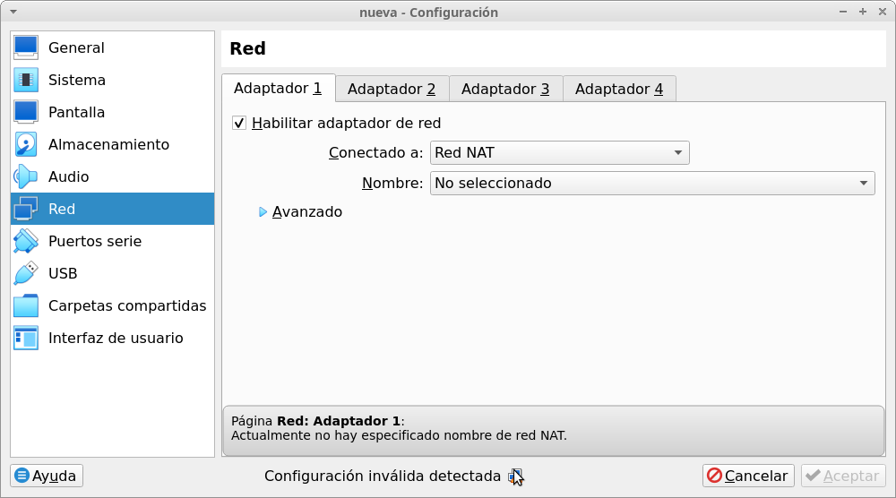

¿Qué es el modo de red NAT?
El modo NAT es el modo de red que viene configurado por defecto en Virtualbox.
Además del modo NAT, en Virtualbox existe, además de otros modos, el modo de red NAT.
- En el modo NAT cada máquina virtual se encuentra aislada del resto de máquinas cuya interfaz de red se encuentre configurada en modo NAT.
- En cambio, todas las máquinas cuya interfaz de red se encuentre configurada en el modo red NAT, se encontrarán dentro de la misma red y podrán comunicarse entre sí y salir a internet. Ahora bien, en este modo, las máquinas virtuales no tienen comunicación con el anfitrión.
El modo red NAT sería algo así como una combinación del modo NAT con el modo red interna.
Como ya hemos comentado anteriormente, en este curso:
- Instalaremos Xubuntu 22.04 en una máquina virtual.
- Configuraremos un servidor puppetmaster en una máquina virtual con Debian 11 para automatizar la distribución de paquetes a nuestros clientes Xubuntu.
- Implementaremos un repositorio local y un mirror local en una máquina virtual con Debian 11 que usaremos como repositorio para nuestros clientes Xubuntu.
Para que las máquinas virtuales se encuentren en la misma red local, aislada de la red física, pero al mismo tiempo, tengan acceso a internet, configuraremos en ellas una interfaz de red en modo red NAT.
Antes de poder usar el modo red NAT, es imprescindible que hayamos creado una red NAT. Si no lo hacéis, al tratar de configurar una interfaz de red de una máquina virtual en el modo de red nat, veréis que el selector de redes nat aparece vacío y VirtualBox os muestra un error que dice "Actualmente no hay especificado nombre de red NAT":
